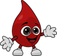

O Instituto Augusto Abou mantém uma Casa de Apoio para pacientes com câncer e incentiva a doação de medula óssea — porque nenhuma família deveria enfrentar essa luta sozinha.

Pacientes em tratamento contra o câncer encontram, na nossa Casa de Apoio, ajuda com alimentação, transporte até o tratamento e medicamentos essenciais — porque cuidar é mais do que tratar a doença.
Conhecer a Casa de ApoioO cadastro é feito pelo REDOME, gratuito, em qualquer hemocentro do país. Poucos minutos que podem significar a única chance de tratamento de alguém.
Ver o passo a passo